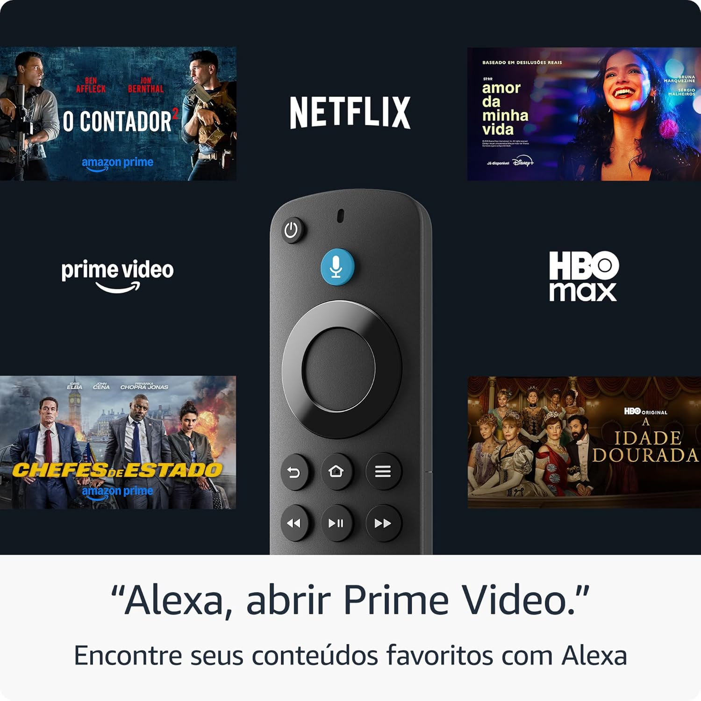

O que você vai encontrar

Tenha Todos os Apps de TV e Esportes em Um Lugar
Assista ao vivo - TV ao vivo e esportes com Prime Video, Globoplay + canais, RecordPlus, Bandplay, Sky+, Claro TV+, Vivo Play e outros. Tarifas de assinatura podem ser aplicadas.

Controle Tudo com Sua Voz com Alexa
Pressione e peça para Alexa - Use a sua voz para facilmente buscar e iniciar filmes e séries em diversos aplicativos.

Leve Seu Entretenimento Para Qualquer Lugar
Leve para qualquer lugar - Conecte à porta de HDMI de qualquer TV para acessar seus aplicativos de entretenimento onde você estiver.